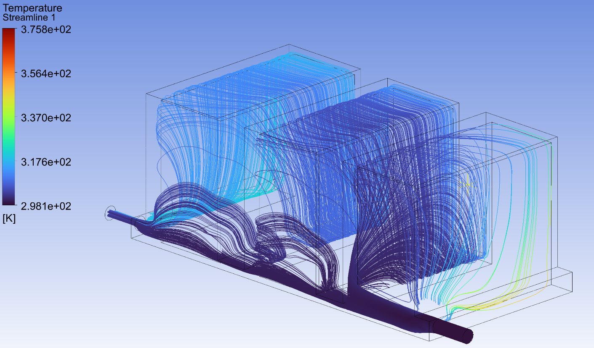
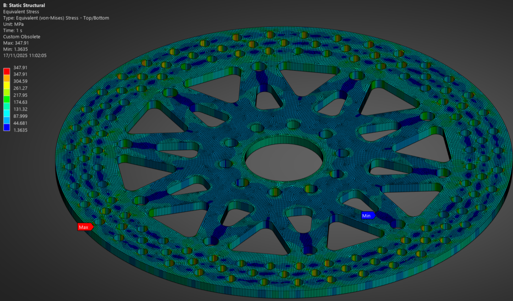
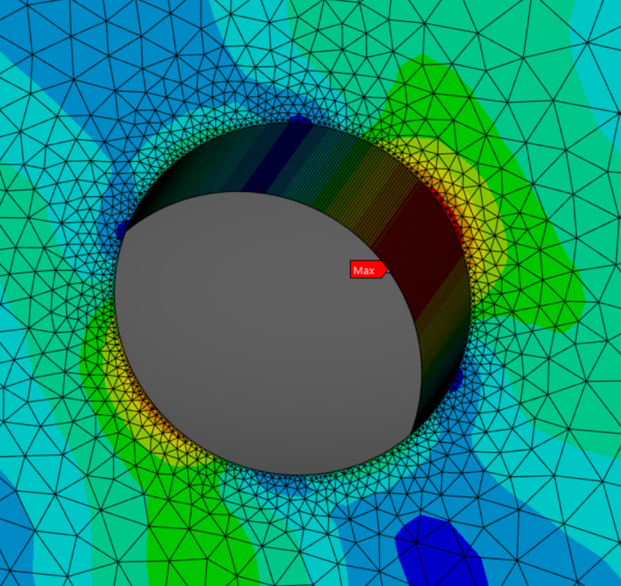

University Simulation Projects

Two simulation-heavy projects: a CFD study of a battery cooling chamber, and a coupled thermal-structural FEM analysis of a brake disc.
Project 1 — CFD: Battery Cooling Chamber. The brief: design a cooling chamber for a battery pack and validate it through CFD. Key objectives were uniform temperature distribution across cells, minimised pressure drop through the cooling channels, and geometry that could actually be manufactured. The design process was iterative — geometry, simulation, interpret, refine. This was where I started treating simulation as a serious engineering tool rather than just a visualisation.
Project 2 — FEM: Brake Disc Thermal-Structural Analysis. Brake discs experience extreme thermal loads during braking, and those loads produce structural stresses that drive fatigue and failure. This was a coupled thermal-structural analysis in Ansys Mechanical — solve the thermal problem first (heat generated by braking, conduction through the disc), then feed those temperature results into the structural model to find the stress distribution. Getting the two models to talk to each other correctly, and making sure results were physically reasonable, required understanding both sides at once.


Both projects followed the same loop: build a model, run the simulation, interpret the results physically, and refine. For the cooling chamber that meant iterating on channel geometry until the thermal and flow results converged on something manufacturable. For the brake disc it meant making sure the two physics models — thermal and structural — were actually passing the right data to each other.
CFD: a validated cooling chamber design with acceptable temperature distribution and pressure drop. FEM: a complete coupled thermal-structural analysis of a brake disc under realistic braking loads, with stress distribution mapped across the disc geometry. Both studies graded at high distinction level.
The shift from F1 in Schools simulations to university-level CFD/FEM is significant: mesh quality, boundary condition setup, solver convergence, physical sanity checks. These projects were where I stopped using simulation to generate pretty pictures and started using it to make engineering decisions I could actually stand behind.